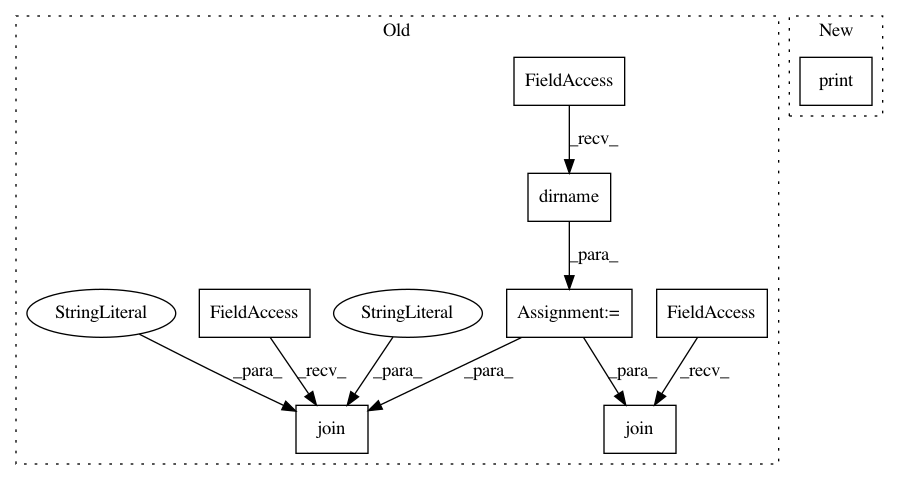

fb7aafd99398e8fbdc74e903e078a884b8ae237f,version.py,,main,#,63
Before Change
def main():
proj_root = os.path.dirname(os.path.abspath(os.path.expanduser(__file__)))
// python path
update(
os.path.join(proj_root, "python", "tvm", "_ffi", "libinfo.py"),
r"(?<=__version__ = \")[.0-9a-z]+",
__version__,
)
// C++ header
update(
os.path.join(proj_root, "include", "tvm", "runtime", "c_runtime_api.h"),
"(?<=TVM_VERSION ")[.0-9a-z]+",
__version__,
)
// conda
for path in ["recipe"]:
update(
os.path.join(proj_root, "conda", path, "meta.yaml"),
"(?<=version = ")[.0-9a-z]+",
__version__,
)
After Change
if opt.git_describe:
pub_ver, local_ver = git_describe_version()
if opt.print_version:
print(local_ver)
else:
sync_version(pub_ver, local_ver, opt.dry_run)
In pattern: SUPERPATTERN
Frequency: 3
Non-data size: 8
Instances
Project Name: apache/incubator-tvm
Commit Name: fb7aafd99398e8fbdc74e903e078a884b8ae237f
Time: 2020-10-26
Author: tqchen@users.noreply.github.com
File Name: version.py
Class Name:
Method Name: main
Project Name: yangyanli/PointCNN
Commit Name: 161b24af716a1e7a3221fce2903544ac1429387d
Time: 2018-06-08
Author: yangyan.lee@gmail.com
File Name: evaluation/eval_s3dis.py
Class Name:
Method Name:
Project Name: pyprob/pyprob
Commit Name: 2728afcd57721b34f95ba575507a3db6c86c1f4c
Time: 2018-02-21
Author: atilimgunes.baydin@gmail.com
File Name: tests/test_model_remote.py
Class Name:
Method Name: